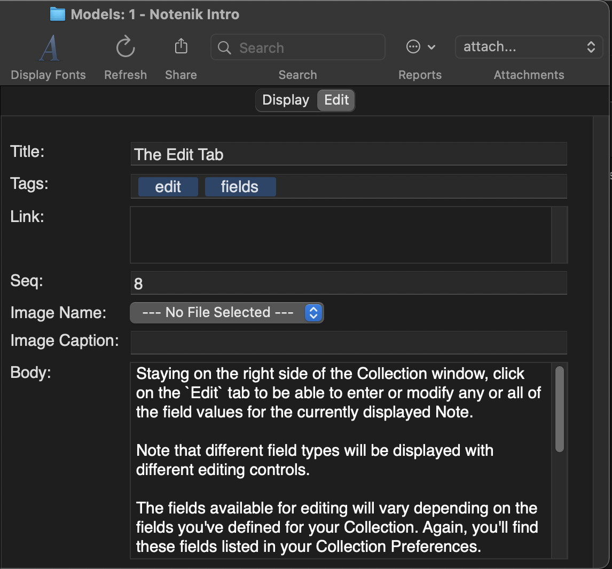

8 The Edit Tab
Staying on the right side of the Collection window, click on the Edit tab to be able to enter or modify any or all of the field values for the currently displayed Note.
Note that different field types will be displayed with different editing controls.
The fields available for editing will vary depending on the fields you’ve defined for your Collection. Again, you’ll find these fields listed in your Collection Settings.
When you’re done editing, you can save your changes and return to the Display tab with any of several different controls.
- Simply click on the Display tab;
- Click on the OK button within the Toolbar;
- Use the keyboard shortcut command S, or select the corresponding Save Note item beneath the Note menu;
- Do pretty much anything else other than editing content on the Edit tab.
Next: Markdown